5.7. 死区补偿¶
5.7.1. 概述¶
死区是在 PWM 周期中高侧和低侧晶体管的栅驱动信号均不活动的延迟。这表现为幅值大致固定的电压畸变，并取决于相电流方向。在矢量控制中，此电压畸变在每个电气周期内重复六次，在相电流每次过零附近有短暂暂态。
MCAF 中的死区补偿可用于抵消部分死区畸变，既作用于电流控制环本身，也作用于 位置和速度估计器。
5.7.2. 死区的定义和来源¶
{kind=link}
图 5.93 三相桥，由驱动电机端子 A、B 和 C 的三个半桥组成。每个半桥有一个高侧和低侧晶体管，可以将相应的电机端子连接到直流母线的正极或负极。¶
死区如 图 5.94所示，表示为 \(\delta_1\) 占整个 PWM 周期的比例 \(T_\text{PWM}\)。它用于适应开关转换所需的时间，并允许一个晶体管在另一个开始导通之前完全关断。这避免了直通，即直流母线两端发生暂时短路并在两个晶体管中引起 high power dissipation in both transistors.

图 5.94 电机某一半桥的栅驱动信号示例¶
中的信号 图 5.94 如下所述。
信号 G 是原始生成的脉冲波形，占空比为 \(D\)。
信号 H 是高侧晶体管的栅极驱动信号，其有效占空比为 \(D-\delta_1\)。
信号 L 是低侧晶体管的栅极驱动信号，其有效占空比为 \(1-(D+\delta_1) = 1-D-\delta_1\)。
当 G 导通时，低侧栅极驱动 L 立即关断，但高侧栅极驱动 H 在死区时间 \(\delta_1T_\text{PWM}\)的延迟后导通。当 G 关断时，高侧栅极驱动 H 立即关断，但低侧栅极驱动 L 在死区时间 \(\delta_1T_\text{PWM}\)。
5.7.3. 死区畸变¶
5.7.3.1. 死区期间的输出电压¶
MCAF 中的矢量控制使用平均值建模。控制变量可以用采样时间内的平均值表示，采样时间由离散数量的半周期组成。MCAF R1 – R9 均使用 1 个完整 PWM 周期作为采样时间。PWM 周期内半桥的平均输出电压为 \(D'V_{dc} = (D+\delta)V_{dc}\) 其中 \(D'\) 为有效占空比， \(D\) 为期望占空比， \(\delta\) 为有效占空比误差。此误差由死区引起，称为死区畸变。
在死区期间，每个半桥输出实际上处于高阻状态，由功率级的续流二极管在直流母线电压轨处钳位。（MOSFET 具有固有体二极管；IGBT 没有，需要反并联二极管）parallel diodes)
这导致死区期间的输出电压随输出电流而变化。在电机驱动中，半桥负载是感性的，因此输出电压为以下之一，如 图 5.95：
{kind=link}
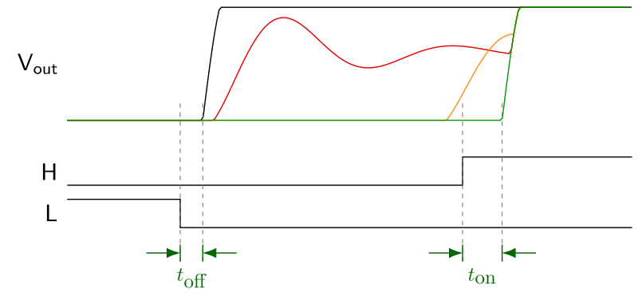
图 5.95 死区期间感性负载下半桥的输出电压。延迟时间 \(t_\textrm{off}\) 和 \(t_\textrm{on}\) 表示栅驱动信号边沿与晶体管电压开始变化时刻之间的传播延迟。¶
如果死区期间输出电流严格为正（从半桥流出），则低侧续流二极管导通，输出电压为 \(-V_d\)，即低于直流母线负端一个二极管压降，如 图 5.95。
如果死区期间输出电流严格为负（流入半桥），则高侧续流二极管导通，输出电压为 \(V_{DC}+V_d\)，即高于直流母线正端一个二极管压降，如 图 5.95。
如果死区期间输出电流达到零，则半桥进入断续导通，电压由感性负载与半桥的寄生电容 \(C_p\) 和漏电阻 \(R_l\) 的相互作用决定。这可能导致频率为 \(f \approx 1/(2\pi\sqrt{L_sC_p})\)的电压振荡，如 图 5.95的红色和橙色曲线所示。精确波形难以预测，且对输出电流的微小变化非常敏感。
图 5.96， 图 5.97，以及 图 5.98 展示了示波器捕获的波形，用于说明死区对 dsPICDEM® MCLV-2 开发板的影响，该板运行在 24Vdc，时间基为 1 μs/格，相电压测量为 10 V/格。
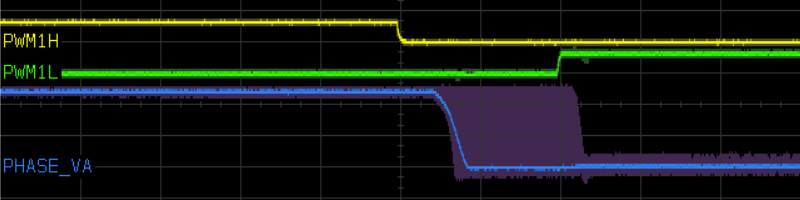
图 5.96 死区期间的输出电压行为，相电压输出下降沿。淡紫色表示多次捕获轨迹的余辉。¶
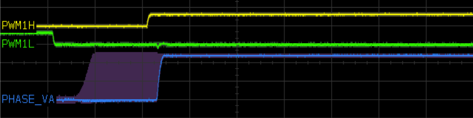
图 5.97 死区期间的输出电压行为，相电压输出上升沿。淡紫色表示多次捕获轨迹的余辉。¶
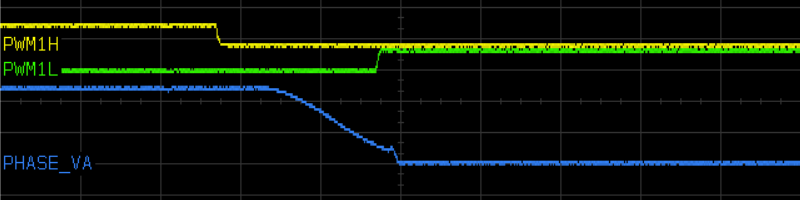
图 5.98 死区期间的输出电压行为，电流近零时相电压输出下降沿。¶
5.7.3.2. 误差边界分析¶
采样时间内的平均电压可以通过观察死区期间大正电流和大负电流引起的上下界来限定。这些是 图 5.95中的绿色和黑色曲线；类似的曲线如 图 5.99 所示，标注了有效占空比 \(D' = D + \delta\)。
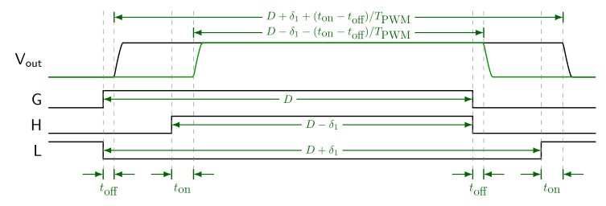
图 5.99 整个 PWM 周期内的有效占空比¶
有效占空比误差的主要项仅为 \(\delta = \plusmn\delta_1\) ，由电流不在零附近时的死区直接引起。还有一些次要效应：
Diode drop voltage \(V_d\) 在死区期间的二极管压降——由此产生的误差往往非常小：例如，在 24 伏系统中 1 伏压降，在整个 PWM 周期总死区时间为 4% 时，代表有效占空比误差为 4% / 24 = 0.17%。它对极低电压系统影响最严重，但这些情况下死区通常可以减小。此外，由于其效应与死区时间成正比，可以合并到有效死区时间 \(\delta_1' \approx \delta_1 (1+V_d/V_{dc})\)
导通和关断时间的不对称——这如 图 5.99所示。它通过导通和关断时间之差有效地延长了死区时间，因为在设计良好的电机驱动中，关断通常比导通快——尽管如果关断比导通慢，它也可能减小有效死区时间。 在示波器波形中似乎就是这种情况，这些波形捕获于 图 5.96 和 图 5.97：输出电压转换的时间跨度小于死区时间。此效应也可合并到有效死区时间 \(\delta_1' \approx \delta_1 + (t_\textrm{on} - t_\textrm{off})/T_\textrm{PWM}\)。
断续导通——这在下一节中讨论。
5.7.3.3. 断续导通期间的行为¶
当电流接近零且半桥进入断续导通时，有效占空比误差 \(\delta\) 介于上下界之间 \(\delta=\plusmn\delta_1\)，且是电流的函数，难以建模。
公式 5.57 分离了电流在 \(|I| < I_\delta\) 附近零时的有趣行为，用非线性函数 \(f_{nl}(u)\)表示，它是一个难以建模的经验非线性函数，将输入范围 [-1,1] 映射到输出范围 [-1,1]。在大多数情况下，不需要知道它究竟是什么；一些非线性函数 \(f_{nl}(u)\) 的示例如 图 5.100所示。MCAF 中的死区补偿仅假设线性函数 \(f_{nl1}(u) = u\)。
{kind=link}
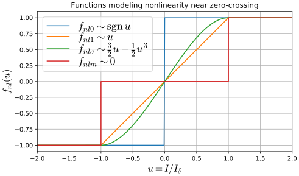
图 5.100 非线性函数示例 \(f_{nl}(u)\) 在其行为范围内变化 \(|u| < 1\)，包括符号函数、恒等函数、 S 型函数和常数。¶
电流幅值 \(I_\delta\) 以下可能发生断续导通的值约等于电流纹波。其在断续导通区内的行为取决于 \(I_\delta\) 和特征电流 \(I_C = C_pV_{dc}/\delta_1T_\textrm{PWM}\) 的相对大小，后者是充电寄生电容 \(C_p\)所需的。参考文献 [3] 详细讨论了这两种效应。
5.7.3.4. 矢量电流控制中的死区畸变电压¶
前面的各节适用于单个半桥带感性负载的情况。在三相电机的矢量电流控制中，死区电压畸变转换到同步（dq）坐标系是有意义的，因为这是电机“看到”的扰动。
图 5.101 展示了单位电压扰动 \(s\) 在各种参考坐标系中的情况，假设正弦电流和平滑角旋转，并忽略断续导通区。
从上到下：
\(I\) ——相电流，幅值为 \(I_0\)
\(s_A, s_B, s_C\) ——对应电流的符号，幅值为 \(\plusmn 1\)
\(s_{\alpha\beta}\) — sign vector in stationary (αβ) frame; \(s_\alpha = \frac{1}{3}(2s_A - s_B - s_C),\;s_\beta = \frac{1}{\sqrt{3}}(s_B - s_C)\)。这表示恒定幅值 \(\frac{4}{3}\) 和每次电流过零时跳变 60° 的角度。
\(s_{dq}\) — sign vector in synchronous (dq) frame; \(s_d = s_\alpha \sin \theta_e - s_\beta \cos \theta_e,\;s_q = s_\alpha \cos \theta_e + s_\beta \sin \theta_e\)
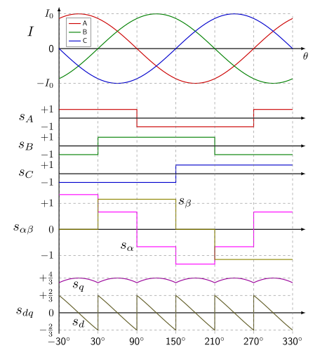
图 5.101 死区畸变产生的单位电压扰动。每相分量 \(s_A, s_B, s_C\) 已显示，还有静止参考坐标系中的单位电压扰动 \(s_{\alpha\beta}\) 和同步参考坐标系中的 \(s_{dq}\) 在同步参考坐标系中。¶
d 轴和 q 轴扰动每 60° 电气角度遵循正弦波形。如果电流矢量沿 q 轴方向，则单位 d 轴扰动 \(s_d\) 以零角度扰动为中心，无直流偏移。单位 q 轴扰动 \(s_q\) 以 90° 为中心，变化较小且有非零偏移。对于每个半桥上的单位死区畸变幅值，这些波形的相关特性列于 表 5.6。
特性 |
值 |
|---|---|
D 轴峰值扰动 |
\(2/3\) |
D 轴有效值扰动 |
\(\sqrt{\frac{8}{9} + \frac{4\sqrt{3}}{3\pi} - \frac{16}{\pi^2}}\approx\) 0.05343 |
Q 轴峰值扰动 |
\(4/3\) |
Q 轴平均扰动 |
\(4/\pi\approx\) 1.27324 |
Q 轴有效值扰动 |
\(\sqrt{\frac{8}{9} - \frac{4\sqrt{3}}{3\pi}} \approx\) 0.39215 |
如果电流矢量包含 d 轴分量，如 磁链控制算法中那样，则死区扰动将以电流矢量方向为中心，而不是以 q 轴为中心。
这些是单位电压扰动的效应。在实际系统中，当电流幅值较大（避免断续导通）时，电压扰动为 \(-\delta_1 V_{dc} s\) 在每个参考坐标系中。换言之：
在静止坐标系中，死区电压扰动为 \(-\delta_1 V_{dc} s_{\alpha\beta}\) ，幅值为 \(\frac{4}{3}\delta_1 V_{dc}\)
在同步坐标系中，死区电压扰动为 \(-\delta_1 V_{dc} s_{dq}\)，幅值也为 \(\frac{4}{3}\delta_1 V_{dc}\)，但在电流矢量 ±30° 范围内扫过一个弧。dq 参考坐标系中的峰值、均值和有效值扰动也可按比例计算，因此 4% 的死区（50 μs PWM 周期中每次转换 2 μs）在 24V 直流母线下 和沿 q 轴的电流矢量应经历约 0.04 × 24 × 1.27324 = 1.22231V.
死区畸变的电压扰动也可以可视化为 x-y 图（α-β 或 d-q）。 图 5.102 展示了 PMSM 在电动象限中的此类图。在静止坐标系中，死区畸变将圆形电压轨迹映射为 6 段不连续弧，看起来像锯齿。在同步坐标系中，死区畸变将代表恒定 dq 电压的单个点映射为一个小弧，沿 q 轴有均值直流偏移，从期望电压中减去。
在发电象限中，电压扰动方向将反转，并导致沿 q 轴的均值直流偏移叠加到期望电压上。
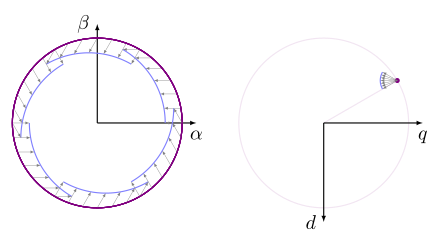
图 5.102 静止（αβ）坐标系（左）和同步（dq）坐标系（右）中死区畸变的电压扰动。此情况表示大相电流（可忽略断续导通），期望电压幅值为 \(V_1\) 超前电流 30° 电气角度，乘积 \(\delta_1 V_{dc}\) （死区比例与直流母线电压的乘积）为 \(0.15V_1\)。在此情况下，αβ 和 dq 坐标系中的扰动幅值为 \(\frac{4}{3}\delta_1 V_{dc} = \frac{4}{3}\times 0.15V_1 = 0.2V_1\)。¶
5.7.4. 死区畸变的实际效应¶
死区畸变在两个主要方面对电机控制有害：
对电流控制的影响
对位置和速度估计器的影响
5.7.4.1. 死区畸变与矢量电流控制¶
在 FOC 中，电流控制器在同步（dq）参考坐标系中运行。死区畸变在 \(6f_e\) （六倍电气频率）处对电流控制器产生电压扰动，出现在相电流每次过零附近。
在低速时，电流控制器最终会在每次暂暂后恢复零稳态误差。 图 5.102 右侧所示的扰动必须通过增加相反符号的电压来抵消：
电机处 q 轴电压的平均降低必须由 q 轴电流控制器增加相同数量的电压来抵消
d 轴扰动约为线性斜坡，必须由 d 轴电流控制器以相反方向的控制器输出变化来抵消。
在高速时，抵消死区电压畸变所需的输出电压变化发生得足够快且足够频繁，以致于电流控制器无法完全抵消畸变。
图 5.103 展示了 Nidec Hurst DMA0204024B101 在低速（约 240RPM）和不同死区下的测量和预测电压需求，由 dsPICDEM® MCLV-2 开发板驱动，运行在平滑轻载条件下，需要 \(I_q \approx\) 0.5 A。左图显示静止坐标系输出电压 \(V_{\alpha\beta}\)。红色圆圈是反电动势幅值。蓝色、橙色和绿色散点图显示 1、2 和 3 微秒死区下 αβ 坐标系电压的测量样本。黑点标记基于纯符号函数 \(f_{nl0}(u)\) （参见 图 5.100）的预测输出电压，本质上显示了反电动势圆的六个 60° 扇区由于抵消死区畸变所需额外电压而向外“爆炸”。这些与测量数据匹配良好，至少在非断续导通时如此。 测量数据中死区畸变的增益略大于预测值（注意蓝色、橙色和绿色六边形散点图略在黑色弧线之外），可能是由于 节 5.7.3.2。
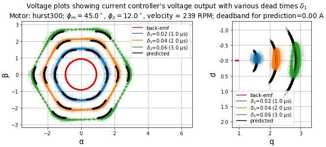
图 5.103 不同死区下静止和同步坐标系中的电压图。¶
的右图 图 5.103 在同步（dq）坐标系中显示相同信息，其中反电动势是一个紧密簇，沿 q 轴变化很小，由微小速度波动引起。 \(V_{dq}\) 的测量和预测数据近似遵循弧线，显示 q 轴电压的增加和 d 轴电压的扫掠。
图 5.104 展示了相同的测量电压，但预测电压考虑了断续导通的影响，通过使用线性模型 \(f_{nl1}(u) = u\) 用于 \(u = I/I_\delta\) 在范围内 \(|I| < I_\delta\) 以处理过零附近的行为（参见 图 5.100）。此图中使用的过零范围为 \(I_\delta\) = 0.12A.
注意与 图 5.103。
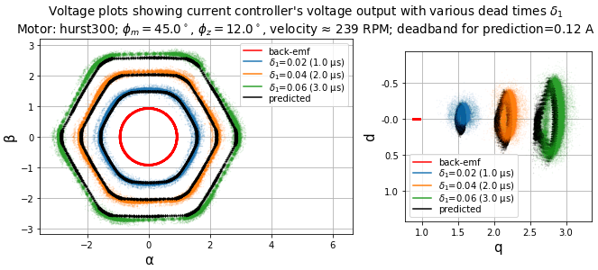
图 5.104 不同死区下静止和同步坐标系中的电压图。¶
电流本身如 图 5.105所示。测量电流在静止坐标系中相当好地跟踪预期的圆形轨迹（同步坐标系中恒定电流 \(I_q\) ），随死区增大而略有退化。
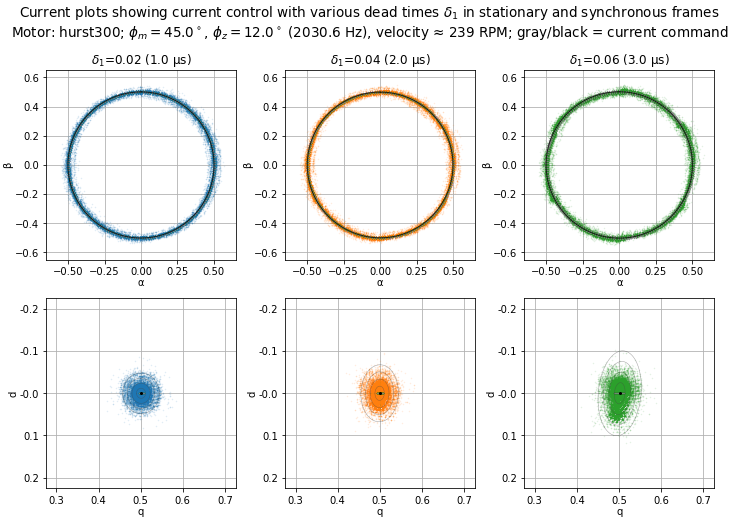
图 5.105 不同死区下静止（αβ）和同步（dq）坐标系中的电流图。黑色圆（αβ 坐标系）和点（dq 坐标系）表示平均 q 轴参考电流；这些直接显示在代表测量 q 轴参考电流的灰色圆（αβ 坐标系）和条（dq）上方，后者随速度和负载变化略微波动。
dq 坐标系中淡同心灰色椭圆是误差椭圆，基于测量电流的协方差，在均值的 1、2、3 和 4 个标准差处。（对于正态分布的纯随机噪声，误差椭圆所包围的数据期望比例遵循 卡方分布 的累积分布函数（CDF），自由度为 2。 \(\chi^2(2)\)的累积分布函数（CDF），自由度为 2。约 39.35% 的样本预期在 1 个标准差以内；86.47% 在 2 个标准差以内，98.89% 在 3 个标准差以内，99.96% 在 4 个标准差以内。）¶
死区畸变的效应随速度增加而变化。 图 5.106， 图 5.107， 图 5.108，以及 图 5.109 展示了同一 10 极电机和电流控制调谐在 1200 RPM 和 1800 RPM 下的情况。
在这些速度下，六次谐波频率分别为 600 Hz 和 900 Hz。两者都低于电流控制带宽（本例中为 2031 Hz），但差距不大，结果是电流畸变增加。
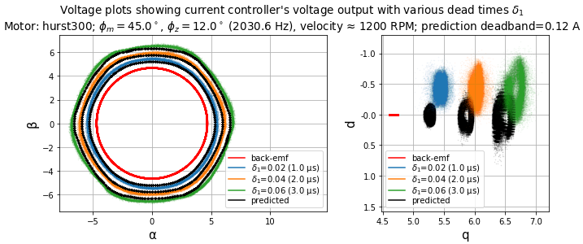
图 5.106 不同死区下静止和同步坐标系中的电压图。¶
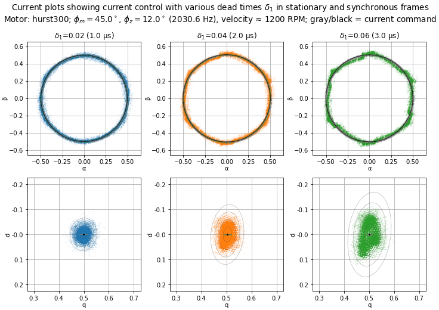
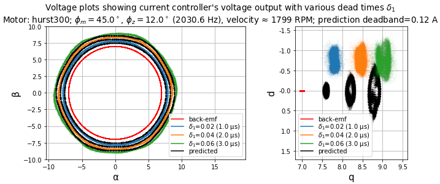
图 5.108 不同死区下静止和同步坐标系中的电压图。¶
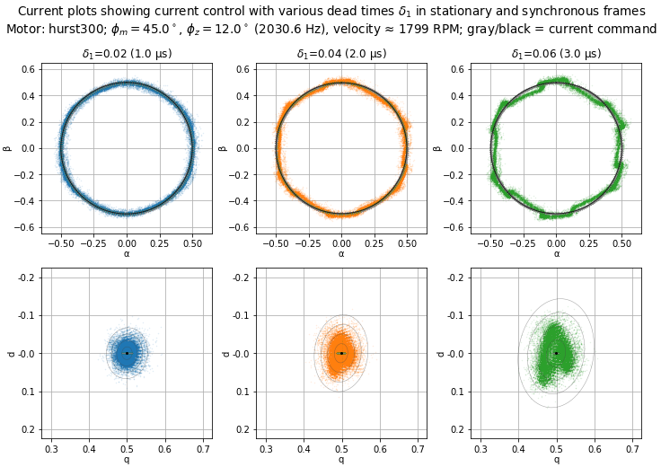
中的直流电压偏移 \(V_{dq}\) visible in 图 5.106 和 图 5.108 （预测电压和测量电压之间的偏移）可能由以下三个效应引起：
resistive voltage drop — \(IR \approx\) 沿 q 轴 0.19V
inductive voltage drop — \(I\omega_e L \approx\) 1200 RPM 时 0.11V，1800 RPM 时 0.17V，沿 d 轴
sample input-to-output delay — \(\omega_e T_d\) 用于 \(T_d = 1.5T_s =\) 75 μs 在 1200 RPM 时约 2.7°，1800 RPM 时约 4.1°。在 1200 RPM 时，沿 q 轴 6 V 信号旋转 2.7° 可预期 d 轴偏移约 0.28 V。在 1800 RPM 时，沿 q 轴 8.2 V 信号旋转 4.1°，可预期 d-axis shift of ≈ 0.58V
总电压偏移与图中的值一致。
5.7.4.1.1. 低带宽电流控制器下的死区畸变¶
我们可以对低带宽电流控制器进行类似的测量。 图 5.110 和 图 5.111 使用同一电机（Nidec Hurst DMA0204024B101），采用 motorBench® Development Suite 中的默认电流环调谐。在此调谐下，电流环带宽约为 235 Hz。这些测试显示在 240 RPM 下运行，平滑轻载约 0.5 A。
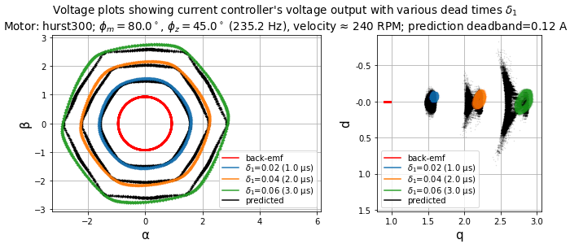
图 5.110 不同死区下静止和同步坐标系中的电压图。¶
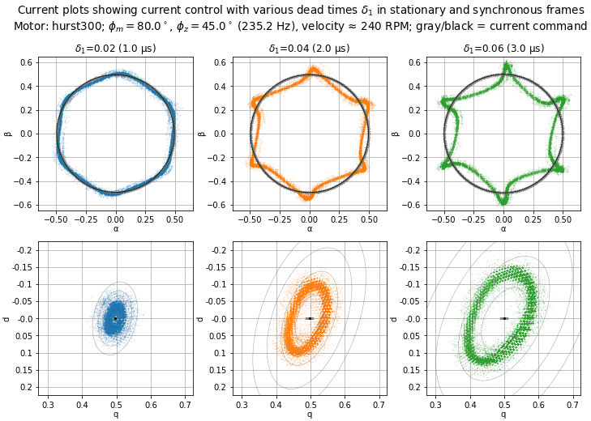
即使在 20 Hz 的低电气频率下，电流畸变也更大；死区畸变频率 \(6f_e =\) 120Hz 约为电流环带宽的一半。
图 5.112 和 图 5.113 展示了 600 RPM（50 Hz 电气频率， \(6f_e =\) 300 Hz）下的运行，平滑轻载约 0.5 A。在此情况下，扰动频率高于电流环带宽，电流环几乎无法对死区畸变作出反应——注意同步坐标系中的电压输出在图中是相当紧密的簇点，而静止坐标系中几乎是圆形。
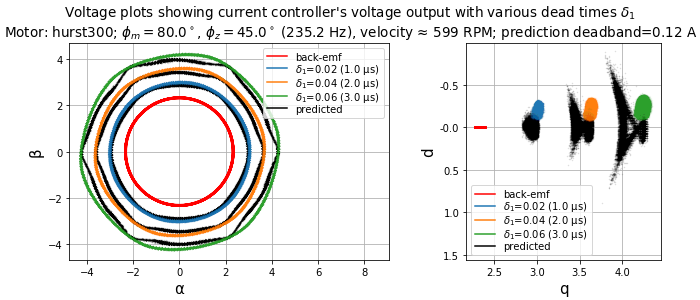
图 5.112 不同死区下静止和同步坐标系中的电压图。¶
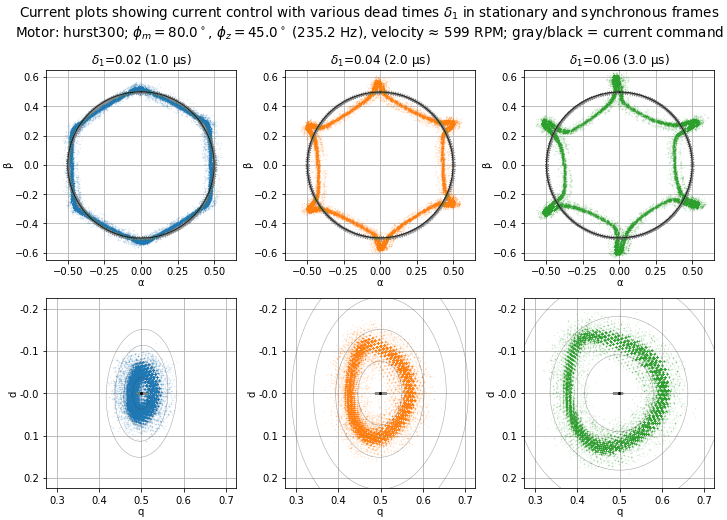
图 5.114 和 图 5.115 展示了 1200 RPM（100 Hz 电气频率， \(6f_e =\) 600 Hz）下的运行，平滑轻载约 0.5 A。在此情况下，扰动频率更高于电流环带宽。同样，电流环几乎无法对死区畸变作出反应——注意静止坐标系中的电压输出几乎是圆形，同步坐标系中相当紧密，尽管有一些主要沿 d 轴的波动，这表明存在角度抖动，可能是由于转矩纹波引起的速度波动。
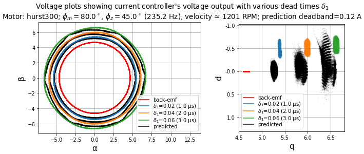
图 5.114 不同死区下静止和同步坐标系中的电压图。¶
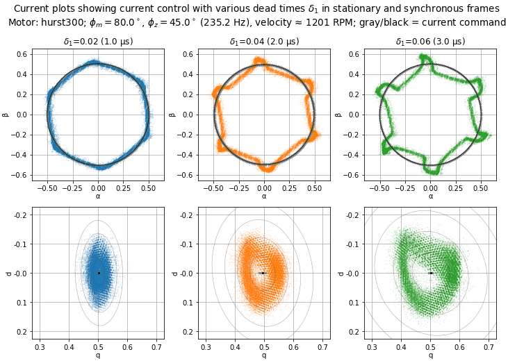
有多种原因需要 以更激进的带宽调谐电流环，改善死区畸变存在时的不良性能是其中之一。
5.7.4.2. 死区畸变与无传感器估计¶
位置和速度估计器 仅基于电压和电流测量的估计器对电压和电流误差敏感。它们通常试图估计反电动势电压矢量并跟踪其角度。由于死区畸变在电流控制器输出和电机端子上的实际电压之间引起电压误差，当反电动势电压低于死区畸变电压幅值 \(\frac{4}{3}\delta_1 V_{dc}\)。
大多数无传感器估计器对 q 轴电压误差较不敏感（一旦估计器锁定，它们只影响估计反电动势矢量的幅值），而对 d 轴电压误差更敏感（它们扰动估计反电动势矢量的角度）。
AN1292 PLL 还依赖于估计反电动势的幅值，因此它可能比其他估计器对死区畸变更敏感。
死区补偿可以通过修正死区畸变对估计反电动势的影响，改善无传感器估计器在低速下的性能。
5.7.5. 死区补偿¶
有三种主要方法可以减轻死区畸变，大致按优先级排序：
减小死区。 这可能通过精心的栅驱动设计和测试来实现。 注意： 不要仅基于在室温下测试一个电机驱动板样品就假定死区足够！尝试最小化死区同时仍保护免直通，需要对开关暂暂对温度、占空比、电流以及晶体管和栅驱动电路的器件间差异的敏感性有详细了解。
提高电流环带宽。 这本质上补偿了死区畸变，至少对于低于电流环带宽的电气频率如此。如上所述， 低带宽电流控制环无法抵消死区畸变的效应。
添加电压补偿。 尽管这是三种方法中最不理想的，但它可以潜在地减轻死区畸变的效应。
5.7.5.1. MCAF 逐相死区补偿算法¶
MCAF 中可用的电压补偿方法基于死区畸变电压的逐相估计，添加到 前向通道 电流控制环的前向通道，以及位置和速度估计器的反馈通道。这被称为“逐相”方法，可以在 motorBench® Development Suite 的自定义页面中选择。
死区补偿模块 dtcomp 如 图 5.117所示，上下文如 图 5.116所示。此模块的输入为相电流 \(I_{abc}\) 和占空比 \(D_{abc2}\) ，它们是 ZSM 模块的输出。

图 5.116 MCAF 中的死区补偿，在主 FOC 框图的上下文中。¶
{kind=link}
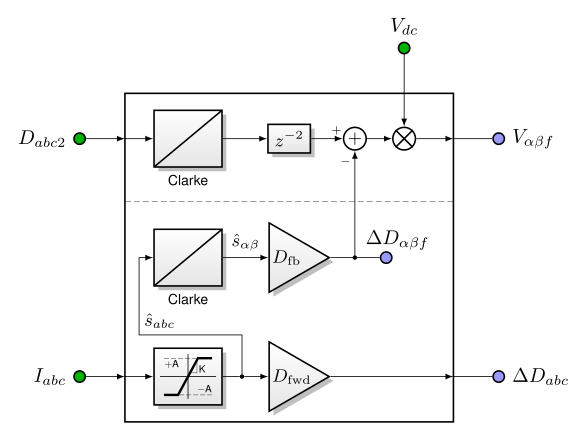
图 5.117 MCAF 中的逐相死区补偿。¶
死区补偿模块的上半部分，即 图 5.117中虚线上方部分，处理用于位置和速度估计器的反馈电压。占空比通过 Clarke 变换转换为静止（αβ）坐标系，然后延迟两个周期以匹配电流采样延迟（待补链接）。 Dead-time compensation vector \(\Delta D_{\alpha\beta f}\)，它是静止坐标系中的占空比矢量，被加到延迟匹配的占空比上，然后乘以直流母线电压 \(V_{dc}\) 以计算估计器反馈电压 \(V_{\alpha\beta f}\)。
死区补偿模块的下半部分展示了死区补偿算法的核心，分为三个部分：
计算估计单位扰动信号 \(\hat{s}_{abc}\)
计算反馈通道死区补偿矢量 \(\Delta D_{\alpha\beta f} = D_{\mathrm{fb}}\hat{s}_{\alpha\beta}\) 从估计单位扰动信号 \(\hat{s}_{\alpha\beta}\) 在静止坐标系中
计算前向通道死区补偿矢量 \(\Delta D_{abc} = D_{\mathrm{fwd}}\hat{s}_{abc}\) 作为逐相集。
逐相单位扰动信号的计算如 图 5.117 所示，使用饱和模块，线性增益为 \(K = K_0/I_\delta\) 对于选定的电流幅值 \(I_\delta\) 和固定缩放因子 \(K_0\)，限幅为 \(\plusmn A = \plusmn 1\)。
这实际上计算了非线性函数 \(f_{nl}(I/I_\delta)\), 如 公式 5.58 并应用为 公式 5.59。
5.7.5.2. 禁用时的行为¶
如果在 motorBench® Development Suite 的自定义页面中选择了死区补偿的“无”变体，则 图 5.117 计算估计器反馈电压 \(V_{\alpha\beta f}\) 仍然执行，但补偿值 \(\Delta D_{\alpha\beta f}\) 和 \(\Delta D_{abc}\) 被设为零。
5.7.5.3. 参数选择¶
三个参数均可调整：
电流线性范围 \(I_\delta\) 作为满量程电流的比例
前向通道增益 \(\alpha_{\mathrm{fwd}} = D_{\mathrm{fwd}}/\delta_1\)
反馈通道增益 \(\alpha_{\mathrm{fb}} = D_{\mathrm{fb}}/\delta_1\)
前向和反馈增益作为预期死区的比例来选择。
注意： 本节中的指南是初步的，基于目前可用的测试。未来的工作可能有助于改善此指南。
5.7.5.3.1. 电流线性范围¶
使用 Nidec Hurst DMA0204024B101 电机和 dsPICDEM® MCLV-2 开发板的实验工作表明在以下范围内稳定性提高： \(K \approx\) 133 – 200，对应 \(I_\delta = 0.01I_{fs}\) = 0.044 A to \(0.015I_{fs}\) = 0.066 A.
5.7.5.3.2. 前向通道增益¶
前向通道死区补偿并不特别成功。不建议在未对目标电机和负载进行详细测试以确定合适值的情况下使用非零前向通道增益。
空载电机承受非常低的 q 轴电流，是减小死区畸变效应的困难对象。
对于 Nidec Hurst DMA0204024B101 电机，仅 \(\alpha_{\mathrm{fwd}} = 0.25\) 的前向通道增益产生最小畸变；增益超过该点太多会导致畸变再次增加。
对于加载约 0.5 A q 轴电流的电机，死区补偿更有效， \(\alpha_{\mathrm{fwd}} = 0.625\) 产生最小畸变。
5.7.5.3.3. 反馈通道增益¶
非零反馈通道增益成功改善了 AN1292 PLL 在极低速下的估计器性能。 \(\alpha_{\mathrm{fb}} = 0.5\) 的值在多台测试电机上普遍成功，将最低运行速度降低了 2 到 4 倍。
If \(\alpha_{\mathrm{fb}}\) 过高时，电机控制器倾向于“锁死”并施加满电流。（如果故意低估电机电阻几个百分点，此效应似乎会减小。）
建议在 AN1292 PLL 中使用非零反馈通道增益，从 0.4 – 0.5 的增益开始。增益可以增加，但需仔细实验以避免“锁死”行为，以改善低速转矩性能。
5.7.5.4. 实验结果¶
一些显示反馈通道死区补偿改善效果的实验数据如下 图 5.118。
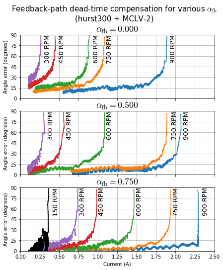
图 5.118 MCAF 中的逐相死区补偿。¶
在此情况下，使用 Nidec Hurst DMA0204024B101 和 dsPICDEM® MCLV-2 开发板，展示在低速下可容忍负载电流的增加。电流环调谐为高带宽（≈ 2 kHz），速度环调谐为低带宽（≈ 1.8Hz），以允许缓慢变化的电流。AN1292 PLL 估计器用于换相，正交编码器作为角度参考。
在多种电机速度下运行，使用三个不同的 \(\alpha_{\mathrm{fb}}\)值，手动施加的负载转矩逐渐增加，直到编码器和估计器偏差超过 60° 电气角度。当换相误差接近 90° 电气角度时，转矩产生迅速下降，电机出现周期滑转 behavior.
图 5.118 显示随着 \(\alpha_{\textrm{fb}}\) 的增加，在给定速度下接近周期滑转前电机电流增加。增加的电机电流意味着电机控制器可以施加更大的电流而换相角度误差更小，从而在低速下提供改善的转矩响应。
5.7.5.5. 实现说明¶
在 R6 中添加。
固定增益缩放因子 \(K_0 = KI_\delta = 2\) 因为在 MCAF 中，电流以两倍 ADC 满量程值的数值满量程表示，以留出设计裕量避免溢出。例如，在 dsPICDEM® MCLV-2 开发板上，满量程 ADC 电流为 4.4 A，但电流的数值满量程范围为 8.8 A。